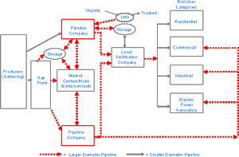

|
About U.S. Natural Gas Pipelines - Transporting Natural
Gas
based on data through 2007/2008 with selected updates |
|||
|---|---|---|---|
|
Transporting natural gas from the wellhead to the final customer involves several physical transfers of custody and multiple processing steps. A natural gas pipeline system begins at the natural gas producing well or field. Once the gas leaves the producing well, a pipeline gathering system directs the flow either to a natural gas processing plant or directly to the mainline transmission grid, depending upon the initial quality of the wellhead product. The processing plant produces pipeline-quality natural gas. This gas is then transported by pipeline to consumers or is put into underground storage for future use. Storage helps to maintain pipeline system operational integrity and/or to meet customer requirements during peak-usage periods. Transporting natural gas from wellhead to market involves a series of processes and an array of physical facilities. Among these are:
The Natural Gas Gathering System A natural gas pipeline system begins at a natural gas producing well or field. In the producing area many of the pipeline systems are primarily involved in "gathering" operations. That is, a pipeline is connected to a producing well, converging with pipes from other wells where the natural gas stream may be subjected to an extraction process to remove water and other impurities if needed. Natural gas exiting the production field is usually referred to as "wet" natural gas if it still contain significant amounts of hydrocarbon liquids and contaminants. Under certain conditions some or all of the natural gas produced at a well may be returned to the reservoir in cycling, repressuring, or conservation operations and/or vented and flared. At this stage it is a mixture of methane and other hydrocarbons, as well as some non-hydrocarbons, existing in the gaseous phase or in a solution with crude oil. The principal hydrocarbons normally contained in the natural gas mixture are methane, ethane, propane, butane, and pentane. Typical non-hydrocarbon gases that may be present in reservoir natural gas are water vapor, carbon dioxide, helium, hydrogen sulfide, and nitrogen.
|
Natural Gas Transmission Path

click to enlarge
|
||
| In proximity to the well are facilities that produce what is referred to as "lease condensate", that is, a mixture consisting primarily of pentanes and heavier hydrocarbons which is recovered as a liquid from natural gas. Other natural gas liquids, such as butane and propane, are recovered at downstream natural gas processing plants or facilities (see below). Once it leaves the producing area, a pipeline system directs flow either to a natural gas processing plant or directly to the mainline transmission grid. Nonassociated natural gas, that is, natural gas that is not in contact with significant quantities of crude oil in the reservoir, is sometimes of pipeline quality after undergoing a decontamination process in the production area, and does not need to flow through a processing plant prior to entering the mainline transmission system. The Natural Gas Processing Plant The principal service provided by a natural gas processing plant to the natural gas mainline transmission network is that it produces pipeline quality natural gas. Natural gas mainline transmission systems are designed to operate within certain tolerances. Natural gas entering the system that is not within certain specific gravities, pressures, Btu content range, or water content level will cause operational problems, pipeline deterioration, or even cause pipeline rupture. Natural gas processing plants are also facilities designed to recover natural gas liquids from a stream of natural gas that may or may not have passed through lease separators and/or field separation facilities. These facilities also control the quality of the natural gas to be marketed. Several types of natural gas processing plants, employing various techniques and technologies to extract contaminants and natural gas liquids, are used to produce pipeline quality "dry" gas. At many processing plants the primary objective is the production of dry gas (demethanizing). Any remaining natural gas liquids extraction stream is directed to a separate plant to undergo what is referred to as a "fractionation" process. But a number of natural gas processing plants do include these fractionation facilities, where saturated hydrocarbons are removed from natural gas and separated into distinct parts, or "fractions," such as propane, butane, and ethane. Essentially, natural gas is methane, a colorless, odorless, flammable hydrocarbon gas (CH4). Also present in natural gas production, especially that in association with oil production, are a number of petroleum gases. They include (in addition to ethane, propane and butane) ethylene, propylene, butylene, isobutane, and isobutylene. They are derived from crude oil refining or natural gas fractionation and are liquefied through pressurization. The Transmission Grid and Compressor Stations The natural gas mainline (transmission line) is a wide-diameter, often-times long-distance, portion of a natural gas pipeline system, excluding laterals, located between the gathering system (production area), natural gas processing plant, other receipt points, and the principal customer service area(s). The lateral, usually of smaller diameter, branches off the mainline natural gas pipeline to connect with or serve a specific customer or group of customers. A natural gas mainline system will tend to be designed as either a grid or a trunkline system. The latter is usually a long-distance, wide-diameter pipeline system that generally links a major supply source with a market area or with a large pipeline/LDC serving a market area. Trunklines tend to have fewer receipt points (usually at the beginning of its route), fewer delivery points, interconnections with other pipelines, and associated lateral lines. A grid type transmission system is usually characterized by a large number of laterals or branches from the mainline, which tend to form a network of integrated receipt, delivery and pipeline interconnections that operate in, and serve major market areas. In form, they are similar to a local distribution company (LDC) network configuration, but on a much larger scale. Between the producing area, or supply source, and the market area, a number of compressor stations are located along the transmission system. These stations contain one or more compressor units whose purpose is to receive the transmission flow (which has decreased in pressure since the previous compressor station) at an intake point, increase the pressure and rate of flow, and thus, maintain the movement of natural gas along the pipeline. Compressor units that are used on a natural gas mainline transmission system are usually rated at 1,000 horsepower or more and are of the centrifugal (turbine) or reciprocating (piston) type. The larger compressor stations may have as many as 10-16 units with an overall horsepower rating of from 50,000 to 80,000 HP and a throughput capacity exceeding three billion cubic feet of natural gas per day. Most compressor units operate on natural gas (extracted from the pipeline flow); but in recent years, and mainly for environmental reasons, the use of electricity driven compressor units has been growing. Many of the larger mainline transmission routes are what is generally referred to as "looped." Looping is when one pipeline is laid parallel to another and is often used as a way to increase capacity along a right-of-way beyond what is possible on one line, or an expansion of an existing pipeline(s). These lines are connected to move a larger flow along a single segment of the pipeline system. Some very large pipeline systems have 5 or 6 large diameter pipes laid along the same right-of-way. Looped pipes may extend the distance between compressor stations, where they can transfer part of their flow, or the looping may be limited to only a portion of the line between stations. In the latter case, the looping often serves as essentially a storage device, where natural gas can be line-packed as a way to increase deliveries to local customers during certain peak periods. To address the potential for pipeline rupture, safety cutoff meters are installed along a mainline transmission system route. Devices located at strategic points are designed to detect a drop in pressure that would result from a downstream or upstream pipeline rupture and automatically stop the flow of natural gas beyond its location. Monitoring the pipeline as a whole are apparatus known as (SCADA Systems Control and Data Acquisition) systems. SCADA systems provide monitoring staff the ability to direct and control pipeline flows, maintaining pipeline integrity and pressures as natural gas is received and delivered along numerous points on the system, including flows into and out of storage facilities. Natural Gas Market Centers/Hubs Natural gas market centers and hubs evolved, beginning in the late 1980s, as an outgrowth of natural gas market restructuring and the execution of a number of Federal Energy Regulatory Commission’s (FERC) Orders culminating in Order 636 issued in 1992. Order 636 mandated that interstate natural gas pipeline companies transform themselves from buyers and sellers of natural gas to strictly natural gas transporters. Market centers and hubs were developed to provide new natural gas shippers with many of the physical capabilities and administrative support services formally handled by the interstate pipeline company as “bundled” sales services. Two key services offered by market centers/hubs are transportation between and interconnections with other pipelines and the physical coverage of short-term receipt/delivery balancing needs. Many of these centers also provide unique services that help expedite and improve the natural gas transportation process overall, such as Internet-based access to natural gas trading platforms and capacity release programs. Most also provide title transfer services between parties that buy, sell, or move their natural gas through the center. As of the end of 2008, there were a total of 33 operational market centers in the United States (24) and Canada (9). Underground Storage Facilities At the end of the mainline transmission system, and sometimes at its beginning and in between, underground natural gas storage and LNG (liquefied natural gas) facilities provide for inventory management, supply backup, and the access to natural gas to maintain the balance of the system. There are three principal types of underground storage sites used in the United States today: depleted reservoirs in oil and/or gas fields, aquifers, and salt cavern formations. In one or two cases mine caverns have been used. Two of the most important characteristics of an underground storage reservoir are the capability to hold natural gas for future use, and the rate at which natural gas inventory can be injected and withdrawn (its deliverability rate). Most underground storage facilities, 327 out of 399 at the beginning of 2008, are depleted reservoirs, which are close to consumption centers and which were relatively easy to convert to storage service. In some areas, however, most notably the Midwestern United States, some natural aquifers have been converted to natural gas storage reservoirs. An aquifer is suitable for natural gas storage if the water-bearing sedimentary rock formation is overlaid with an impermeable cap rock. While the geology of aquifers is similar to that of depleted production fields, their use in natural gas storage usually requires more base (cushion) gas and greater monitoring of withdrawal and injection performance. Deliverability rates may be enhanced by the presence of an active water drive. During the past 20 years, the number of salt cavern storage sites has grown significantly because of its rapid cycling (inventory turnover) capability coupled with its ability to respond to daily, even hourly, variations in customer needs. The large majority of salt cavern storage facilities have been developed in salt dome formations located in the Gulf Coast States. Salt caverns leached from bedded salt formations in Northeastern, Midwestern, and Western States have also been developed but the number has been limited due to a lack of suitable geology. Cavern construction is more costly than depleted field conversions when measured on the basis of dollars per thousand cubic feet of working gas capacity, but the ability to perform several withdrawal and injection cycles each year reduces the per-unit cost of each thousand cubic feet of natural gas injected and withdrawn. Underground natural gas storage inventories provide suppliers with the means to meet peak customer requirements up to a point. Beyond that point the distribution system still must be capable of meeting customer short-term peaking and volatile swing demands that occur on a daily and even hourly basis. During periods of extreme usage, peaking facilities, as well as other sources of temporary storage, are relied upon to supplement system and underground storage supplies. Peaking needs are met in several ways. Some underground storage sites are designed to provide peaking service, but most often LNG (liquefied natural gas) in storage and liquefied petroleum gas such as propane are vaporized and injected into the natural gas distribution system supply to meet instant requirements. Short-term linepacking is also used to meet anticipated surge requirements. The use of peaking facilities, as well as underground storage, is essentially a risk-management calculation, known as peak-shaving. The cost of installing these facilities is such that the incremental cost per unit is expensive. However, the cost of a service interruption, as well as the cost to an industrial customer in lost production, may be much higher. In the case of underground storage, a suitable site may not be locally available. The only other alternative might be to build or reserve the needed additional capacity on the pipeline network. Each alternative entails a cost. A local natural gas distribution company (LDC) relies on supplemental supply sources (underground storage, LNG, and propane) and uses linepacking to "shave" as much of the difference between the total maximum user requirements (on a peak day or shorter period) and the baseload customer requirements (the normal or average) daily usage. Each unit "shaved" represents less demand charges (for reserving pipeline capacity on the trunklines between supply and market areas) that the LDC must pay. The objective is to maintain sufficient local underground natural gas storage capacity and have in place additional supply sources such as LNG and propane air to meet large shifts in daily demand, thereby minimizing capacity reservation costs on the supplying pipeline.
| |||